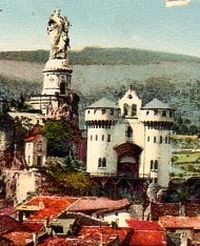
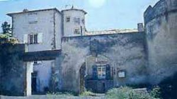
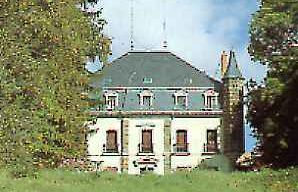
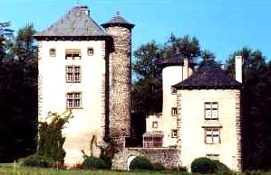
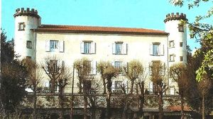
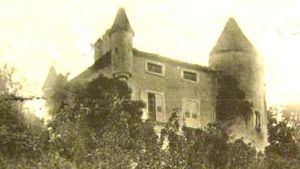
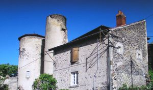
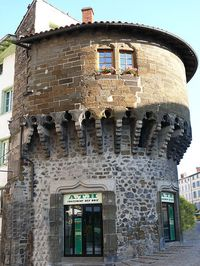
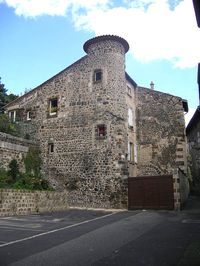

Recensement Jean-Claude Truffet
| Département | 43 — Haute-Loire |
| Canton | Le Puy-en-Velay |
| Commune | Le Puy-en-Velay |
| Type d'édifice | Patrimoine |
| Période d'origine | XII |









PUY-en-VELAY, aux évêques du Puy, en 1142, Raymond II, comte de Tripoli (1137-1142), fils de Pons de Saint-Gilles, donne à l'évêque du Puy, Humbert d'Albon (1128-1144), tout ce qu'il possède dans le « comté des Vellaves ». C'est la première mention d'un comté du Velay. Jusque là on utilisait la formule « Pagus Vellaicus ». Le Velay était une partie de l'Auvergne. Ce document est transmis à Robert III qui est comte d'Auvergne et du Velay ils recevront notamment en 1213 lhommage pour la vicomté de Polignac, mais il ny a pas de preuve quils prirent le titre de comte du Velay avant 1405. Le Velay dépend du gouvernement royal de la généralité du Languedoc ayant pour chef-lieu Montpellier, une sénéchaussée indépendante demeure au Puy jusquen 1789. À la Révolution, le Velay retrouva le nom du peuple Gaulois qui avait consacré à leur dieux ces lieux magnifiques, sous lEmpire, le département de la Haute-Loire avec Le Puy comme chef-lieu.
Dans la commune le château de Mons (voir article) la maison forte d'Espaly , d'Ebde et le château d'Ours. Tour principale du XVe siècle. Travaux de réaménagement dans la seconde partie du XVIe siècle. Château dévasté par un incendie en 1683. Portail et oratoire du XVIIIe siècle. Au XIXe siècle, installation des Jésuites de Vals, qui y réalisent de nombreux aménagements, construction de l'aile des dortoirs, de la grande chapelle, de la galerie à étages. Au nord Ouest à Brive-Charensac le château FARNIER, maison forte construite au XVIe siècle par Pierre Farnier, marchand drapier et seigneur de Saint-Martin de Fugères.
Commanderie du XIIIe siècle, La ville s'entoure de remparts entre 1220 et 1240 qui vont lui servir de limite jusqu'au XVIIIe siècle. La Tour Pannessac est l'un de ses vestiges. Elle a été classée Monument Historique fin XIXe siècle. Le rocher Corneille avec la statue de Notre-Dame de France, de la plateforme on a une belle vue sur les toits rouges de la ville. Le rocher est surmonté d'une statue de la Vierge Marie, qui mesure plus de 16 mètres et pèse 110 tonnes, peinte en rouge. Elle fut érigée en 1860 avec la fonte du fer de 213 canons venant de la prise de Sébastopol en 1855 pendant la guerre de Crimée et donnés par Napoléon III. (Sculpteur : Jean Marie Bienaimé Bonnassieux ; fondeur : Prenat à Givors). Elle a été rénovée fin 2012, retrouvant sa couleur « rouge cuivrée datant de 1986. Les hôtel de particuliers de Chaumeils, Fillière de Charrouihl, Girardin, Coubladour (gravure) Cambacérès,la Battut Mailhet de Vachères, de Marcelange, Miramon, Monteyremard, Pons des Ollières, Pradier d'Agrain,d la Prévôté, Sanhard, Sénejol, Vinols, et la tour Pannesac à mâchicoulis le musée Crozatier Mons, Chantier en cours, les propriétaires ont commencés l'aménagement du bâtiment le plus récent du château dont la ruine était quasi totale il y a 4 ans à la suite de plusieurs vandalisme et incendie. Le travail le plus intéressant est pour l'instant celui de la réfection d'une vingtaine d'ouverture refaites à l'ancienne en 2013. Farnier, La propriété forme un quadrilatère de bâtiments et de murs autour d'une cour intérieure. La partie Est du bâtiment sud a conservé sa voûte en berceau au rez de chaussée ainsi que la tourelle d'escalier centrale en vis, la façade sud a conservé une échauguette d'angle ainsi qu'une bretèche. Le bâtiment est-ouest a perdu une tour circulaire au XXe siècle.
Adhémar de Monteil, Pierre Farnier
"
Patrimoine du Puy en Velay château de Bonnasou, de Borne, de Bornette, de Jalavoux, du Fieu, de l'Ours et tour de Pannessac.